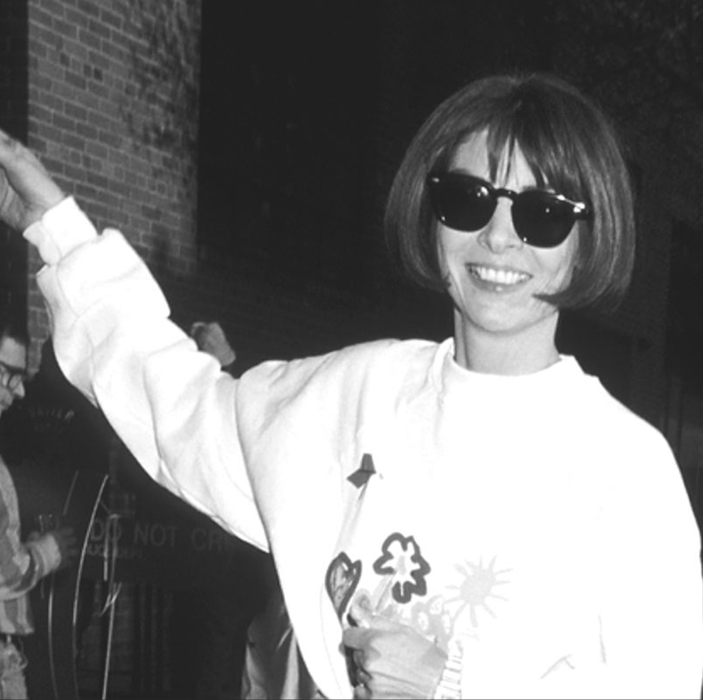
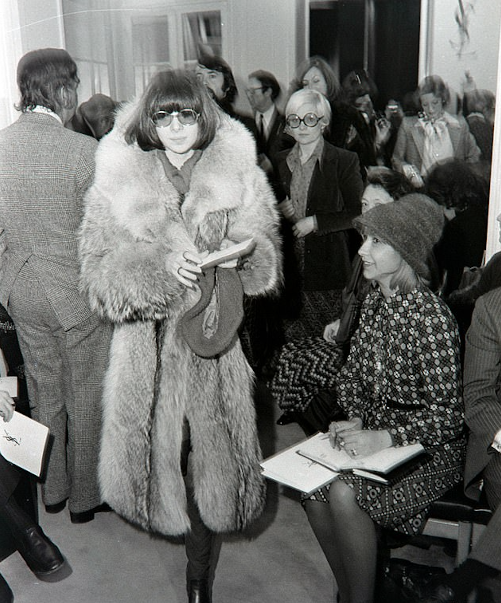
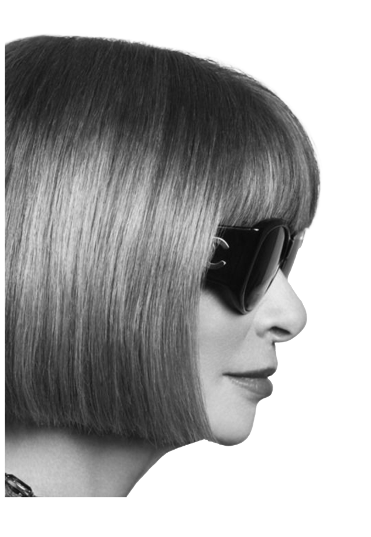
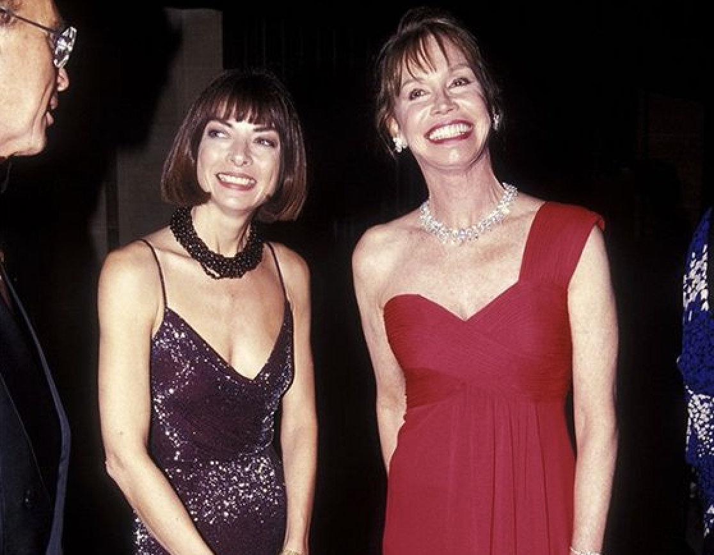
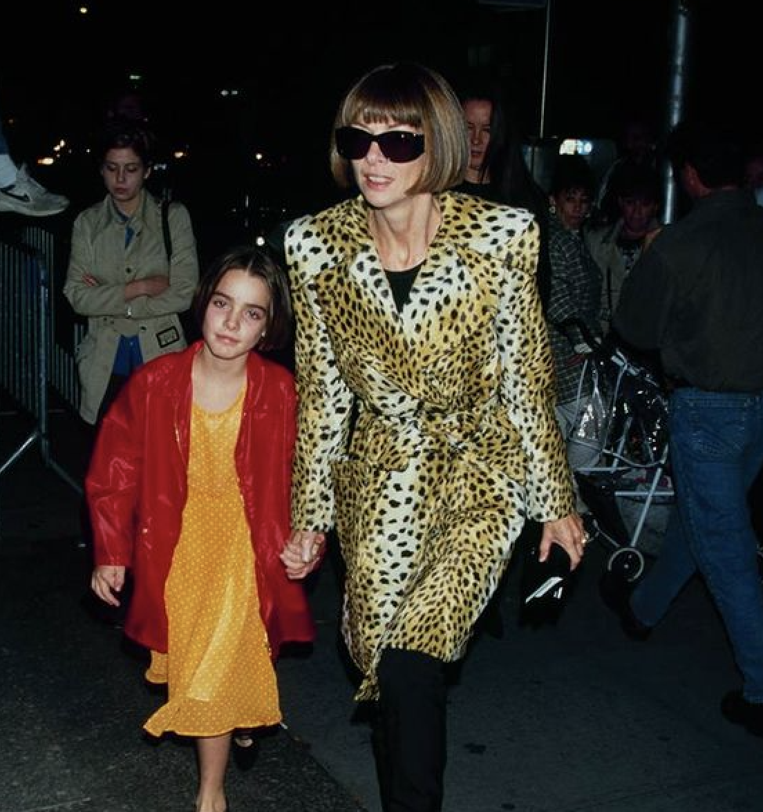
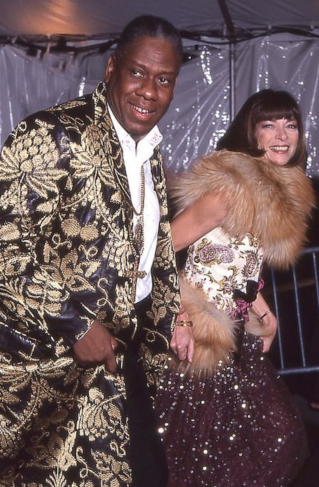
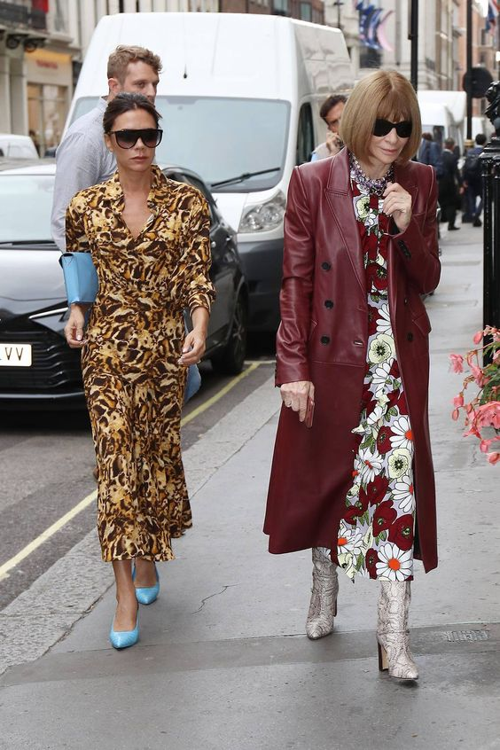
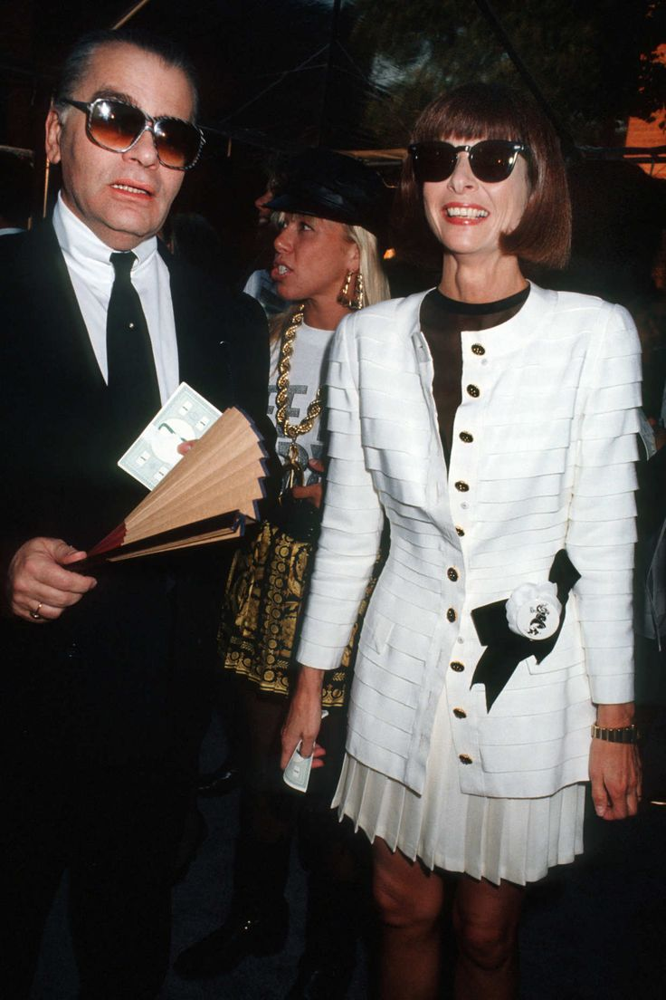
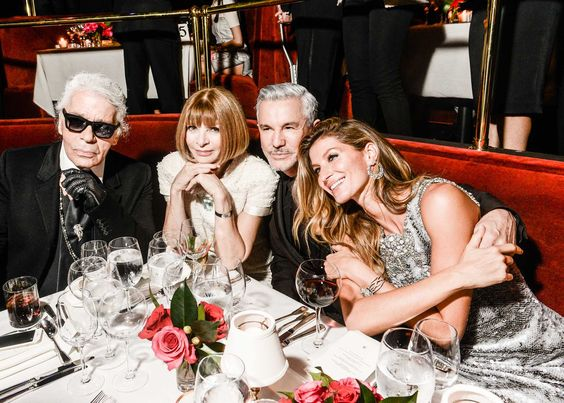
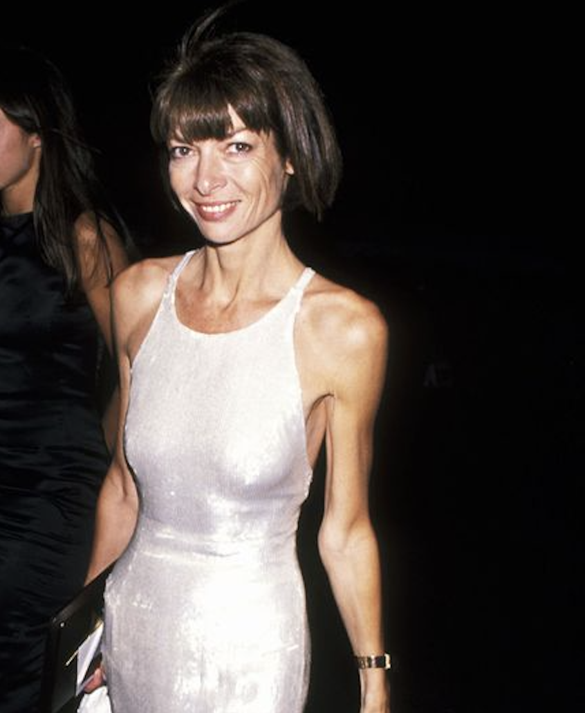

1
"If you can't be better, just be better than your competition"
A.W


ANNA WINTOUR
2
Wintour was born in London, United Kingdom to The Evening Standard's
editor-in-chief Charles Wintour and philathropist, Elinor Wintour. She had four siblings,
Patrick, James, Nora, and Gerald.
She attended North London Collegiate School, but dropped out in 1966 to pursue a career
in fashion. Wintour's father heavily influenced her to work in publishing.


3

"I was thrown into my career, frankly, with ignorance. I knew nothing. You had to learn everything, you had to do everything, you had to know how to multitask.I think this also gives you a certain strength that you are not stuck in one box".
Wintour began her career at Harpers & Queen in 1970, working in the fashion department. She then
began working at Harper's Baazar in 1975, when she moved to New York.
After, Wintour was fired from Harper's Baazar for her shoots being “too sexual”, she joined Viva with help from a
friend. Viva ceased operations in 1978, leading Wintour to travel the world with then boyfriend.
Following her travels, she was appointed Editor-In-Chief of British Vogue in 1985. With her extensive experience
in the field, she was asked to revive House & Garden Magazine in 1987. Ten months later she moved back to
New York to take over the role of Editor-In-Chief of Vogue.
In 1995, Wintour became chair of the Met Gala, transforming it into of the biggest fashion events of the year
today. The Met Gala serves as a fundraiser to support the Metropolitan Museum of the Arts Costume Institution.
The gala features the top names in fashion, film, sports, and business.
4






